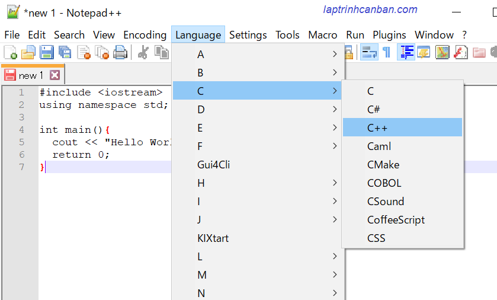

Hướng dẫn cách viết và lưu một chương trình C++. Bạn sẽ học được cách lựa chọn phần mềm để viết C++ cũng như cách viết chương trình C++ cơ bản trong bài học này.
Lựa chọn phần mềm viết code C++
Để viết chương trình C++, chúng ta cần lựa chọn phần mềm viết code C++. Chúng ta có thể viết code C++ bằng hầu hết các phần mềm viết code thông dụng hiện nay như Notepad ++, Sublime Text, hay là Visual Studio - Microsoft. Nếu trong máy không cài những phần mềm này, bạn thậm chí có thể dùng phần mềm viết code C++ đơn giản nhất, đó chính là Notepad - phần mềm chỉnh sửa văn bản có sẵn trong windows. Kiyoshi thì hay dùng phần mềm Notepadd++ để viết code C++ , nên trong phạm vi website này mình sẽ hướng dẫn cho các bạn viết code C++ với phần mềm Notepad ++ nhé.
Bạn có thể download phần mềm này tại https://notepad-plus-plus.org.
Ngoài ra, bạn cũng có thể dùng các chương trình viết code dưới đây:
- Sublime Text : phần mềm viết code C++ miễn phí, download tại https://www.sublimetext.com/3
- Visual Studio - Microsoft : phần mềm viết code C++ miễn phí miễn phí, download tại https://visualstudio.microsoft.com/
- Dev C++: công cụ miễn phí cung cấp một phần mềm soạn thảo cũng như tạo môi trường lập trình C++/C++. Cách cài và sử dụng tại đây
- Các bạn ở Nhật Bản thì có thể dùng phần mềm viết code C++ miễn phí Sakura editor , download tại https://sakura-editor.github.io/
Cách viết chương trình C++
Bạn sẽ viết chương trình C++ bằng cách soạn thảo trên phần mềm viết code C++ rồi lưu file C++ này lại với đuôi file là cpp. Sau đó bạn có thể chạy chương trình C++ đã được lưu trong file C++ này, hoặc chỉnh sửa nó nhiều lần theo ý muốn.
Sau đây chúng ta hãy cùng xem các công đoạn viết chương trình C++ với phần mềm viết code C++ Notepad++ nhé.
Khởi động phần mềm viết code C++ và viết chương trình C++.
Trước hết hãy khởi động phần mềm Notepad ++, sau đó bạn sẽ viết các dòng lệnh của của chương trình trực tiếp vào mà hình của phần mềm này. Ví dụ, chúng ta sẽ nhập các dòng code của một chương trình C++ đơn giản dưới đây vào màn hình của Notepad ++:
|
Màn hình Notepad++ sẽ như dưới đây:
Đặt ngôn ngữ lập trình trong phần mềm viết code Notepad ++
Khi bạn viết các dòng code trên vào Notepad ++, thì Notepad ++ vẫn chưa nhận biết được ngôn ngữ lập trình bạn đang sử dụng là C++ đâu, nên chức năng tự điểu chỉnh màu giúp dễ soạn thảo hơn của Notepad ++ vẫn chưa được kích hoạt. Do đó bạn phải đặt ngôn ngữ lập trình sử dụng trong chương trình là C++ bằng một trong hai cách dưới đây:
- Cách 1: Click Language > C++ > C++
- Cách 2: Nhấn tổ hợp phím Alt + L > C++ > C++

Khi đó, Notepad ++ sẽ tự động đổi màu chữ giúp bạn phân biệt các câu lệnh dễ dàng hơn như hình dưới đây:
Lưu chương trình C++
Về mặc định, chương trình C++ sẽ được viết và lưu giữ lại với một file có đuôi file là .cpp. Ví dụ như hello.cpp hay sample.cpp. Đuôi file là dòng ký tự giúp chúng ta biết file đó thuộc loại file gì. Trong C++ thì mặc định đuôi file là .cpp như trên.
filename.cpp
Sau khi lưu chương trình với đuôi file .cpp, chúng ta có thể biên dịch và chạy file C++ đó, hoặc tiến hành sửa chương trình được ghi trong file đó.
Ví dụ như chúng ta sẽ lưu lại file C++ vừa viết ở trên với tên là hello.cpp. Cách lưu file C++ trong Notepad ++ như sau:
-Click vào File> Save , sau đó nhập hello.cpp vào hộp Filename.
-Chọn định dạng file là C++ source file(*.h;*.hh;*.cpp trong hộp Save as type .
-Chọn nơi lưu file bằng cách chọn đường dẫn tại hộp Save in. Trong ví dụ này, giả định bạn lưu file vào folder D:\code\cpp\hello.cpp.
-Cuối cùng nhấn vào Save để hoàn tất lưu file.
Tổng kết
Trên đây Kiyoshi đã hướng dẫn bạn cách viết và lưu 1 chương trình C++ rồi. Ở bài tiếp theo, chúng ta sẽ cùng học cách biên dịch(compile) và chạy chương trình vừa mới viết nhé.
URL Link
HOME › lập trình c++ cơ bản dành cho người mới học lập trình>>03. viết chương trình c++